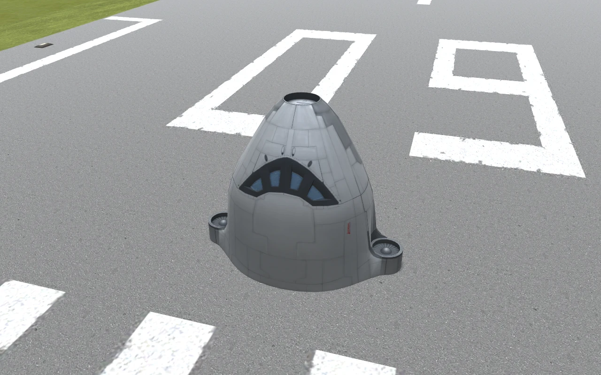
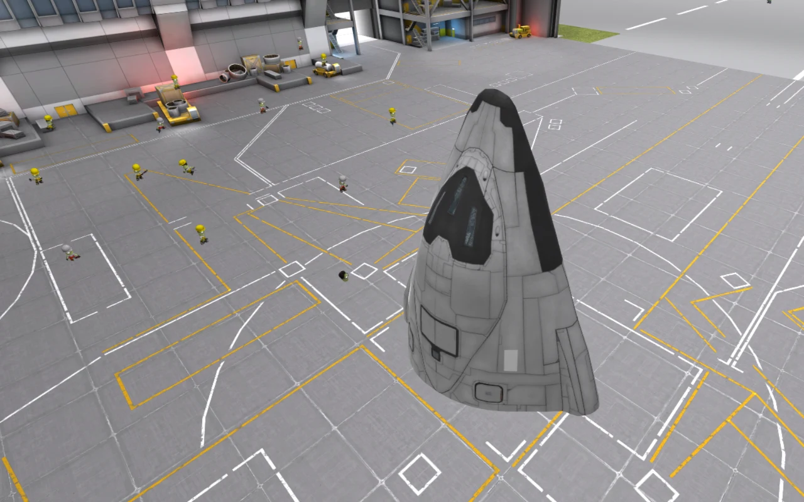
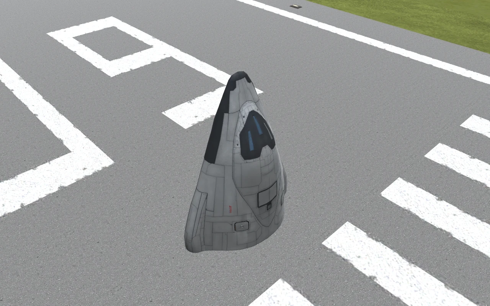
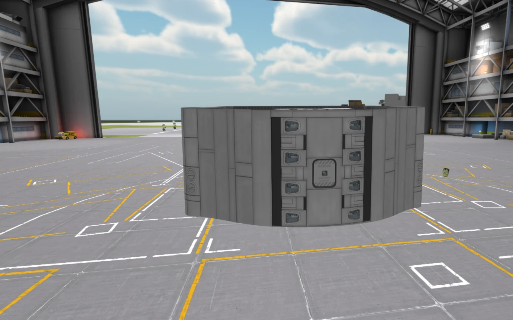
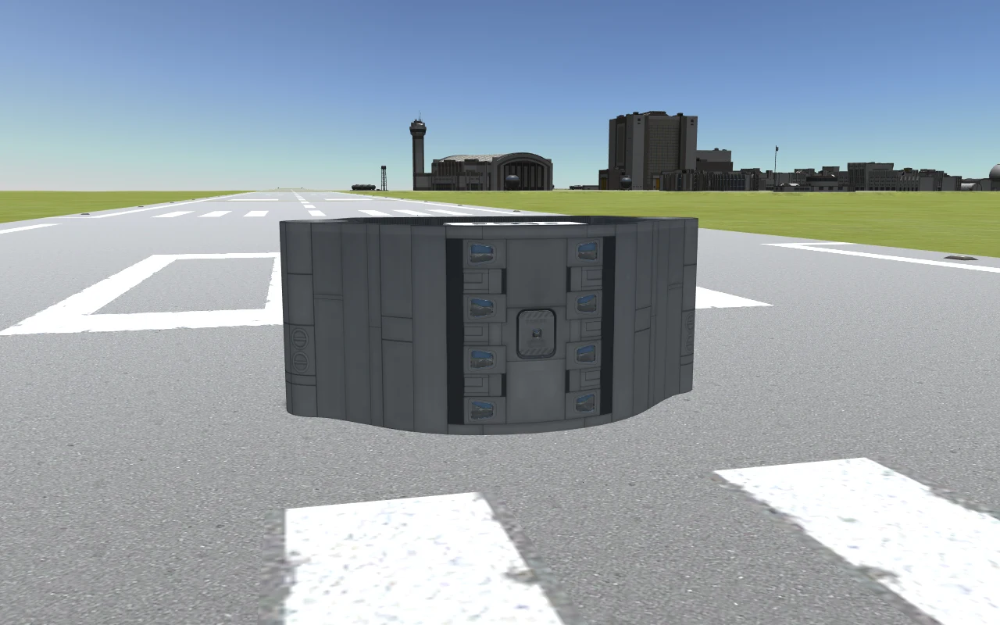

ShineFix home
← Back to supported mods
Mark IV Spaceplane System
Optics verified
Human tested
Version 3.2.1
Compatibility evidence
Original screenshot gallery
Parts
Mk4 'Thunderhawk' Cockpit

Mk4 'Vulture' Cockpit


Mk4 Crew Cabin

